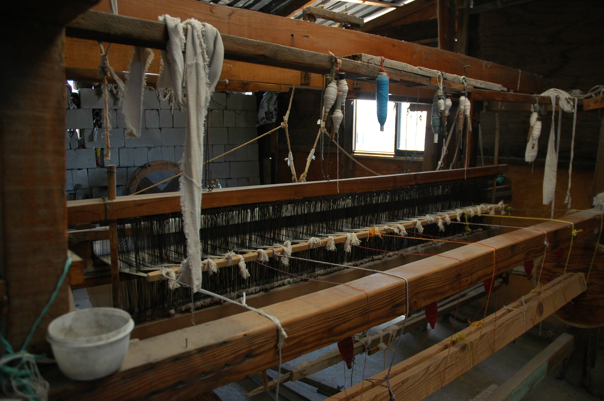

Weaving

"Silk handloom weavers weave silk sarees and sell through co-operative societies
.You can visit their weaving places also
INFO:
Through co-operative society you can buy pure silk sarees.Its being sold accross the world
Kumbakonam silk sarees is famous for its quality and purity
Kumbakonam is an important silk-weaving centre and more than 5,000 families were employed either directly or indirectly in silk weaving. Silk weaved in Kumbakonam is regarded as one of the finest in the subcontinent. They are largely used in the manufacture of Thirubuvanam silk sarees.Kumbakonam was also an important salt-manufacturing area during British rule..